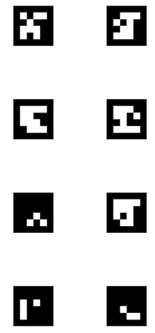
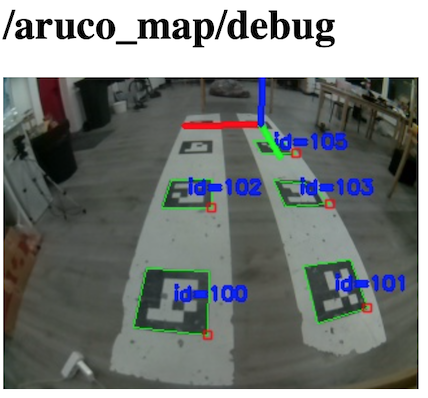
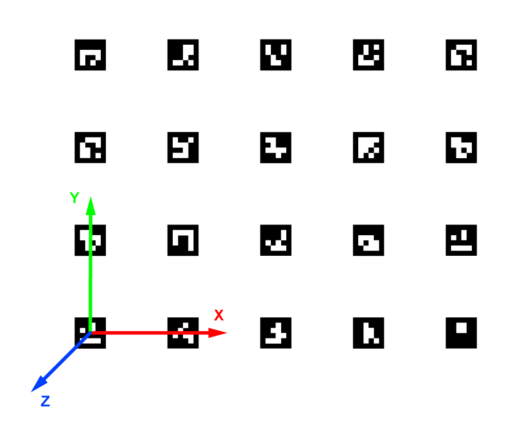
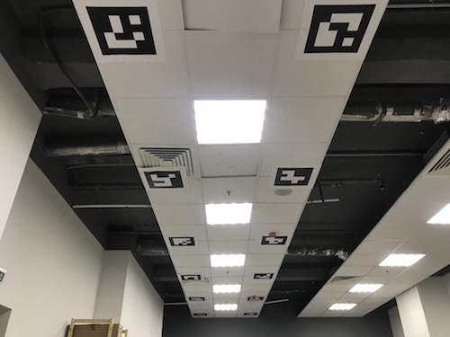

Навигация по картам ArUco-маркеров
Подсказка Для распознавания маркеров модуль камеры должен быть корректно подключен и сконфигурирован.
Модуль aruco_map распознает карты ArUco-маркеров, как единое целое. Также возможна навигация по картам ArUco-маркеров с использованием механизма Vision Position Estimate (VPE).
Конфигурирование
Аргумент aruco в файле ~/technic_ws/src/technic/technic/launch/technic.launch должен быть в значении true:
<arg name="aruco" default="true"/>
Для включения распознавания карт маркеров аргументы aruco_map и aruco_detect в файле ~/technic_ws/src/technic/technic/launch/aruco.launch должны быть в значении true:
<arg name="aruco_detect" default="true"/>
<arg name="aruco_map" default="true"/>
Для включения передачи координат в полетный контроллер по механизму VPE, аргумента aruco_vpe должен быть в значении true:
<arg name="aruco_vpe" default="true"/>
Настройка карты маркеров
Карта загружается из текстового файла, каждая строка которого имеет следующий формат:
id_маркера размер_маркера x y z угол_z угол_y угол_x
Где угол_N – это угол поворота маркера вокруг оси N в радианах.
Файлы карт располагаются в каталоге ~/technic_ws/src/technic/aruco_pose/map. Название файла с картой задается в аргументе map:
<arg name="map" default="map.txt"/>
Смотрите примеры карт маркеров в вышеуказанном каталоге.
Файл карты может быть сгенерирован с помощью инструмента genmap.py:
rosrun aruco_pose genmap.py length x y dist_x dist_y first -o test_map.txt
Где length – размер маркера, x – количество маркеров по оси x, y - количество маркеров по оси y, dist_x – расстояние между центрами маркеров по оси x, y – расстояние между центрами маркеров по оси y, first – ID первого (левого нижнего) маркера, test_map.txt – название файла с картой. Дополнительный ключ --bottom-left позволяет нумеровать маркеры с левого нижнего угла.
Пример:
rosrun aruco_pose genmap.py 0.33 2 4 1 1 0 -o test_map.txt
Дополнительную информацию по утилите можно получить по ключу -h: rosrun aruco_pose genmap.py -h.
Проверка
Для контроля карты, по которой в данный момент коптер осуществляет навигацию, можно просмотреть содержимое топика /aruco_map/image. Через браузер его можно просмотреть при помощи web_video_server по ссылке http://10.42.0.1:8080/snapshot?topic=/aruco_map/image:

Техник публикует текущую позицию распознанной карты в топик aruco_map/pose. Также публикуется TF-фрейм aruco_map (VPE выключен) или aruco_map_detected (VPE включен). Используя топик aruco_map/visualization можно визуализировать текущую карту маркеров в rviz.
Наглядно позиция распознанной карты отображается в топике aruco_map/debug (просмотр доступен по ссылке http://10.42.0.1:8080/stream_viewer?topic=/aruco_map/debug):

Система координат
По соглашению в маркерном поле используется стандартная система координат ENU:
- ось x указывает на правую сторону карты маркеров;
- ось y указывает кверху карты маркеров;
- ось z указывает от плоскости карты маркеров.

Настройка VPE
Для работы механизма Vision Position Estimation необходимы следующие настройки PX4.
При использовании EKF2 (параметр SYS_MC_EST_GROUP = ekf2):
- В параметре
EKF2_AID_MASKвключены флажкиvision position fusion,vision yaw fusion. - Шум угла по зрению:
EKF2_EVA_NOISE= 0.1 rad. - Шум позиции по зрению:
EKF2_EVP_NOISE= 0.1 m. EKF2_EV_DELAY= 0.
Для проверки правильности всех настроек можно воспользоваться утилитой selfcheck.py.
Полет
При правильной настройке коптер начнет удерживать позицию в режимах POSCTL и OFFBOARD автоматически.
Для автономных полетов можно будет использовать функции navigate, set_position, set_velocity. Для полета в определенные координаты маркерного поля необходимо использовать фрейм aruco_map:
# Вначале необходимо взлететь, чтобы коптер увидел карту меток и появился фрейм aruco_map:
navigate(x=0, y=0, z=2, frame_id='body', speed=0.5, auto_arm=True) # взлет на 2 метра
time.sleep(5)
# Полет в координату 2:2 маркерного поля, высота 2 метра
navigate(x=2, y=2, z=2, speed=1, frame_id='aruco_map') # полет в координату 2:2, высота 3 метра
Полет в координаты по ID маркера
По аналогии с навигацией по отдельным маркерам при настройке карты маркеров дрон сможет лететь в координаты относительно отдельного маркера, используя фрейм aruco_ID с соответствующим ID маркера.
Полет в точку над маркером 5 на высоту 1 метр:
navigate(frame_id='aruco_5', x=0, y=0, z=1)
Дополнительные настройки
Если коптер нестабильно удерживает позицию по VPE, попробуйте увеличить коэффициенты P PID-регулятора по скорости – параметры MPC_XY_VEL_P и MPC_Z_VEL_P.
Если коптер нестабильно удерживает высоту, попробуйте увеличить коэффициент MPC_Z_VEL_P или лучше подобрать газ висения – MPC_THR_HOVER.
Расположение маркеров на потолке

Для навигации по маркерам, расположенным на потолке, необходимо поставить основную камеру так, чтобы она смотрела вверх и установить соответствующий фрейм камеры.
Также в файле ~/technic_ws/src/technic/technic/launch/aruco.launch необходимо выставить аргумент placement в значение ceiling:
<arg name="placement" default="ceiling"/>
Технология Optical Flow не может нормально работать при таком расположении камеры, поэтому в файле ~/technic_ws/src/technic/technic/launch/technic.launch ее следует отключить:
<arg name="optical_flow" default="false"/>
При такой конфигурации фрейм aruco_map также окажется перевернутым. Таким образом, для полета на высоту 2 метра ниже потолка, аргумент z нужно устанавливать в 2:
navigate(x=1, y=2, z=1.1, speed=0.5, frame_id='aruco_map')